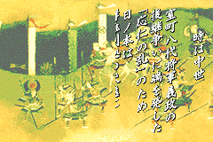
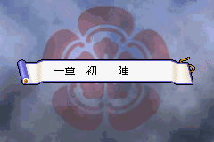

Nobunaga Ibun (Japan)
Stateless / Passcode 💾 MultiBoot
Cartridge Identity
- Game Code
ANOJ(FamilyANO)- Header Title
NOBUNAGAIBUN- Maker / Revision
BP/ rev0- ROM Size
- 8.0 MiB (8,388,608 B)
- Save Media
None / Unknown- SHA-256
bc62b653038ee9962780c3b73061a133cb92bbeea04fb40613fcbc5d562269e6
Screenshots


Link Cable & Multiplayer Communications
This title contains detected communication capabilities: 💾 MultiBoot.
Detailed protocol specifications, SIO registers, Joybus commands, and MultiBoot sequences are documented in the Link & Multiplayer Reference.
- Single-Cart MultiBoot
- Single-Cartridge MultiBoot (Download Play) client/server handler · Thumb SWI 0x25 (
0xDF25):0x18bd78,0x1b8f1c,0x1f0b34,0x3522d0
Cartridge Storage Architecture: Stateless / Passcode
Zero non-volatile battery hardware: This cartridge PCB contains ROM only (no SRAM, Flash, or EEPROM chips). Progression is preserved via on-screen passcodes or session-only gameplay. No
.sav file is generated or required.
Asset Map (formatkit.asset-map.v1)
Download ANOJ-r0-bc62b653038ee996.asset-map.json.gz (47,089 B (46.0 KiB)) Verified PASS · 40.78% coverage
| Metric | Bytes / Value | Entries |
|---|---|---|
| Identified | 17,272 B (16.9 KiB) (0.21%) | 369 |
| Mapped | 0 B (0.00%) | 0 |
| Opaque | 3,403,916 B (3.25 MiB) (40.58%) | 1 |
| Unknown | 4,967,420 B (4.74 MiB) (59.22%) | 368 |
| Total ROM Size | 8,388,608 B (8.00 MiB) | 738 |
| Coverage % | 40.78% | — |
| Entries w/ Code Refs | 381 / 738 (51.63%) | — |
Top Identified Formats: gfx.gba-palette (367 · 16,544 B (16.2 KiB)) · audio.m4a-song-table (1 · 536 B) · gba.rom-header (1 · 192 B)
Largest unknown Extents (Headerless / Custom Asset Candidates)
| Offset | Size | Shannon Entropy | Code Refs |
|---|---|---|---|
0x00226B3C | 1,063,952 B (1.01 MiB) | 7.022 bits/B | 0 |
0x003C519C | 758,712 B (740.9 KiB) | 7.094 bits/B | 0 |
0x0038091C | 280,672 B (274.1 KiB) | 6.699 bits/B | 0 |
0x00167A50 | 279,564 B (273.0 KiB) | 7.097 bits/B | 0 |
0x000FA4AC | 217,272 B (212.2 KiB) | 6.803 bits/B | 0 |
gzip -dk ANOJ-r0-bc62b653038ee996.asset-map.json.gz && gbakit map verify rom.gba ANOJ-r0-bc62b653038ee996.asset-map.json
gbakit assets export rom.gba --asset-map ANOJ-r0-bc62b653038ee996.asset-map.json -o out/Text, Fonts & Scene Data
- Primary Text Encoding
- Shift-JIS (uncompressed) (
5ASCII strings ·200Shift-JIS runs) - Font & VWF Indicators
- VWF Width Table 1bpp Font · BIOS SWIs: BitUnPack
0x10:11· LZ770x11/12:47· Huffman0x13:3· RLE0x14/15:7 - Scene & Packaging
12ROM pointer tables (≥32 entries,1≥200) ·0relativeu32TOCs ·101OAM metasprite hits